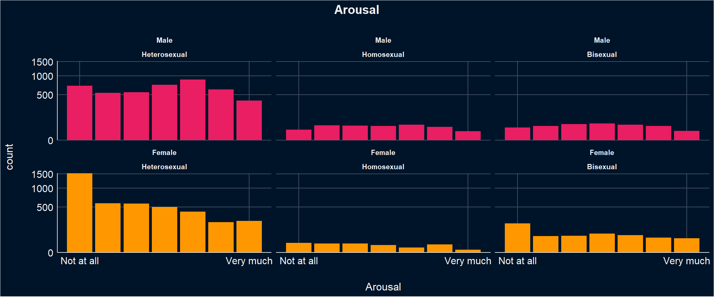
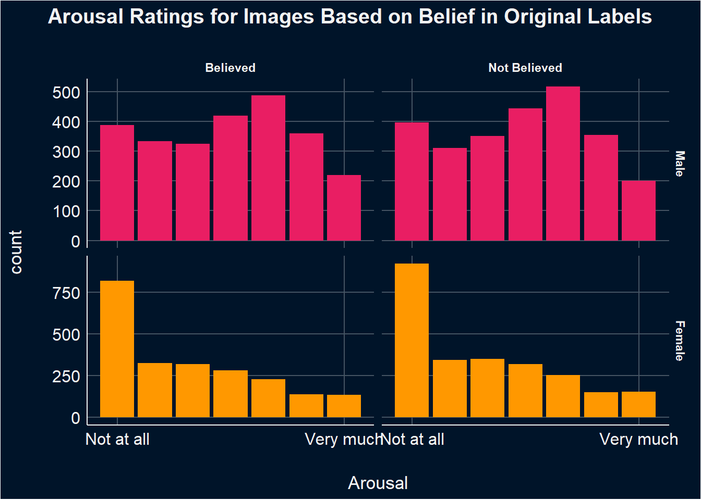
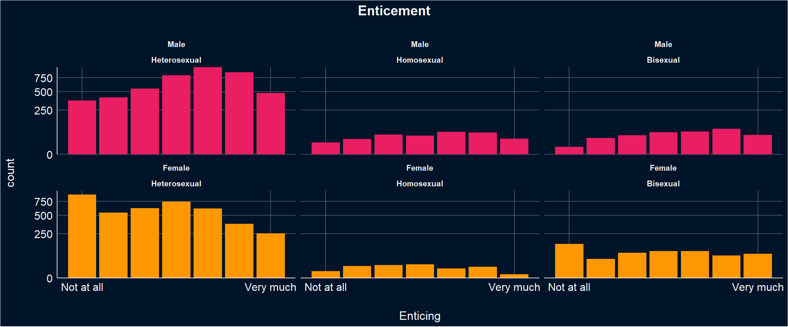
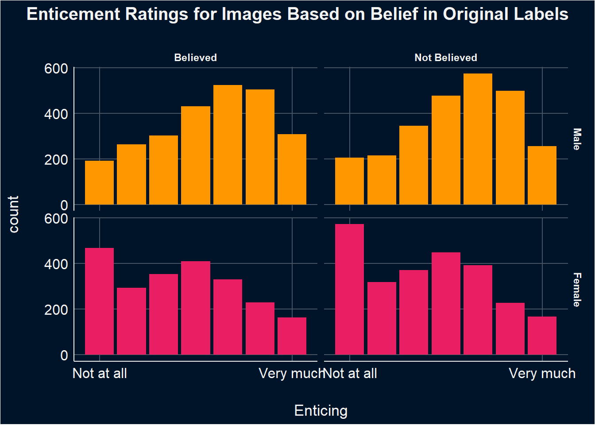
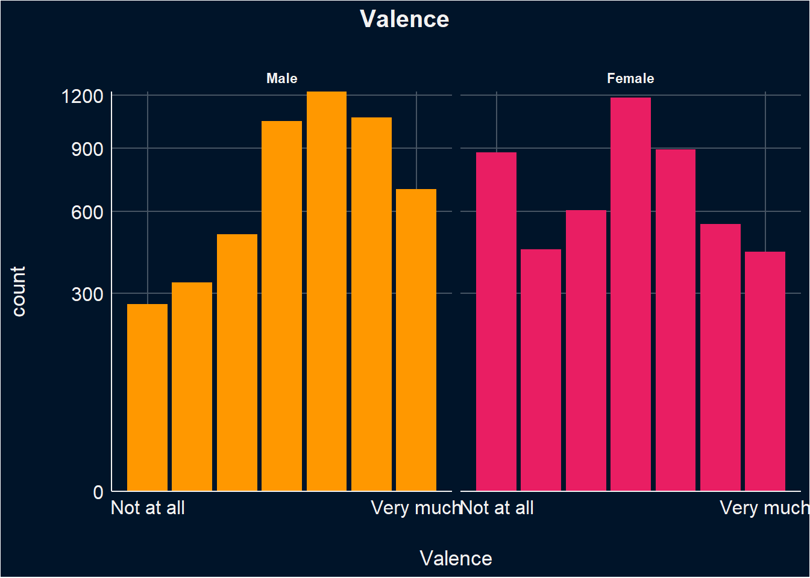
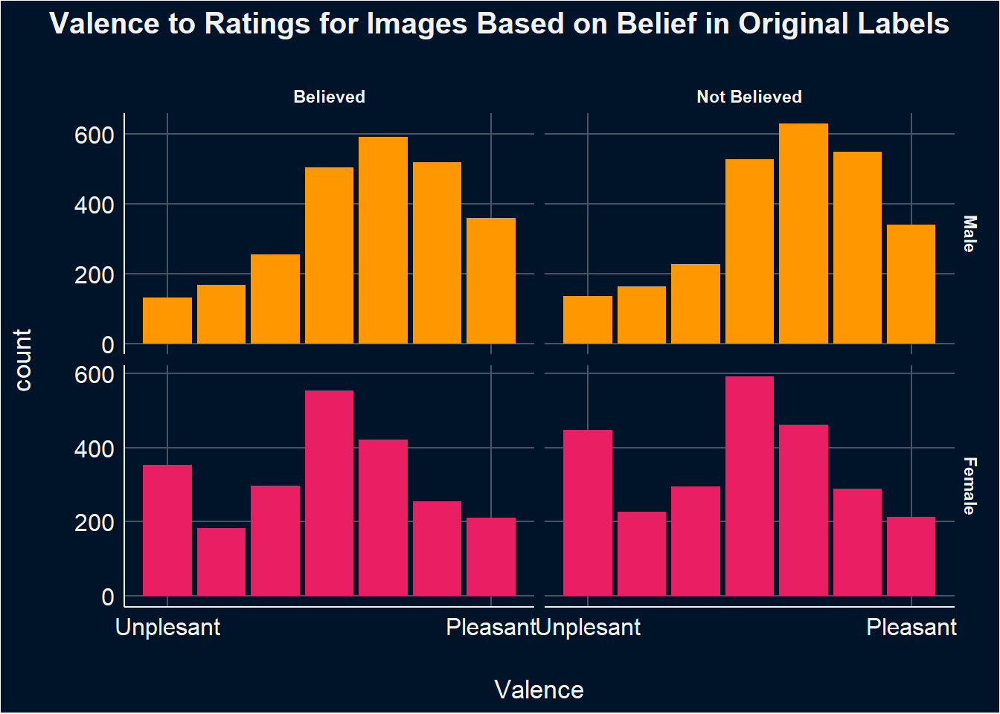

Code
library(tidyverse)
library(easystats)
library(patchwork)
library(ggside)
library(glmmTMB)
options(mc.cores = parallel::detectCores(),
brms.backend = "cmdstanr",
width = 300)library(tidyverse)
library(easystats)
library(patchwork)
library(ggside)
library(glmmTMB)
options(mc.cores = parallel::detectCores(),
brms.backend = "cmdstanr",
width = 300)dfsub <- read.csv("../data/data_participants.csv")
df <- read.csv("../data/data.csv") |>
right_join(
select(dfsub, Participant, Mobile, starts_with(c("Feedback_","BAIT")), COPS_Frequency, SexualActivity,- Feedback_Text),
by = "Participant"
) |>
datawizard::rescale(select= c("Arousal", "Enticing", "Valence"), range=c(0, 6), to=c(0,1)) |>
datawizard::rescale(select= c("Realness"), range=c(-3,3), to=c(0,1)) |>
mutate(Condition = case_when(
Condition == "Fiction" ~ "AI-Generated",
Condition == "Reality" ~ "Photograph"
)) |>
mutate(Condition = fct_relevel(Condition, "Photograph", "AI-Generated"),
Gender = fct_relevel(Gender, "Male", "Female"),
PornFrequency = as.numeric(as.factor(COPS_Frequency)),
SexualActivity_num = as.numeric(as.factor(SexualActivity)),
ConditionBelief = case_when(
Condition == "Photograph" & Realness > 0.5 ~ "True",
Condition == "AI-Generated" & Realness < 0.5 ~ "True",
.default = "False",
)) |>
rename(AllRealConfidence = "Feedback_AllRealConfidence",
AllFakeConfidence = "Feedback_AllFakeConfidence",
Enjoyment = "Feedback_Enjoyment"
)|>
mutate(across(starts_with("Feedback_"), as.factor)) |>
mutate(ConditionBelief = as.factor(ConditionBelief))
results_table <- function(model, effects="fixed", filter=NULL) {
if("marginaleffects" %in% class(model)) {
model |>
parameters::parameters() |>
as.data.frame() |>
select(-Parameter, -SE, -S, z=Statistic, -Predicted) |>
insight::format_table() |>
parameters::display()
} else {
display(parameters::parameters(model, effects=effects, keep=filter))
}
}Note: These calculations are based on the validation of the BAIT scale
df$BAIT_Videos <- (df$BAIT_VideosRealistic + (1 - df$BAIT_VideosIssues)) / 2
df$BAIT_Visual = (df$BAIT_ImagesRealistic + (1 - df$BAIT_ImagesIssues) + df$BAIT_ImitatingReality + df$BAIT_EnvironmentReal) / 4
df$BAIT_Text = (df$BAIT_TextRealistic + (1 - df$BAIT_TextIssues)) / 2
df$BAIT_Negative <- (df$BAIT_Worry + df$BAIT_Dangerous)/2
df$BAIT_Positive <- (df$BAIT_Exciting + df$BAIT_Benefit)/2This section is about selecting the best model. Notably, all the stimuli presented are of an erotic nature. Note that variables were rescaled to [0,1] when fitting the models and that the stimuli presented to participants was assigned according to their self-rated sexuality, making all stimuli relevant to participants.
To summarise, women rate stimuli on average significantly lower in arousal, enticiment and valence than men.
In general, males exhibited greater variability in their arousal ratings, while females tended to provide more lower arousal ratings.
The pattern of arousal ratings for images that participants believed to be either AI-generated or photos (i.e., initially labeled as photos and later rated as photos, or initially labeled as AI and later rated as AI), as well as for images where participants disagreed with the original labels, was generally similar within genders. However, between genders, women tended to provide more low arousal ratings than men.
arousal <- df |>
ggplot(aes(x=Arousal, fill = Gender)) +
geom_bar() +
scale_y_sqrt(expand = c(0, 0)) +
scale_x_continuous(
breaks = c(0, 1),
labels = c("Not at all","Very much")) +
labs(title = "Arousal", ) +
facet_wrap(~Gender) +
scale_fill_manual(values=c("Male"="#E91E63", "Female"="#FF9800"), guide="none") +
theme_abyss() +
theme(plot.title = element_text(hjust = 0.5, face="bold"))
arousal
df |>
mutate(ConditionBelief = as.factor(ConditionBelief)) |>
mutate(ConditionBelief = case_when(
ConditionBelief == "False" ~ "Not Believed",
ConditionBelief == "True" ~ "Believed",)) |>
ggplot(aes(x=Arousal, fill=Gender)) +
geom_bar(position = "identity") +
scale_x_continuous(
breaks = c(0, 1),
labels = c("Not at all","Very much")) +
facet_grid(Gender~ConditionBelief, scales="free_y") +
scale_color_manual(values=c("red", "white"), guide="none") +
scale_fill_manual(values=c("Male"="#E91E63", "Female"="#FF9800"), guide="none") +
# scale_y_sqrt(expand = c(0, 0)) +
labs(title = "Arousal Ratings for Images Based on Belief in Original Labels") +
theme_abyss() +
theme(plot.title = element_text(hjust = 0.5, face="bold"))
# Get a sense of Random Factors
m1 <- glmmTMB::glmmTMB(Arousal ~ Gender + (1|Participant), data=df)
m2 <- glmmTMB::glmmTMB(Arousal ~ Gender + (1|Participant) + (1|Stimulus ), data=df)
m3 <- glmmTMB::glmmTMB(Arousal ~ Gender + (1|Participant) + (1+Gender|Stimulus ), data=df)
test_bf(m1,m2, m3)
compare_performance(m1, m2, m3)
# Model m3, which includes random intercepts for Participants and both random intercepts and slopes for Gender at the Stimulus level, seems to be the bestThis model evaluate ths the effects of Gender on Arousal, accounting for random variability due to participants (i.e., random effects). The analysis revealed that on average women rate erotic stimuli significantly lower in arousal than men.
m_a <- glmmTMB::glmmTMB(Arousal ~ Gender + (1|Participant),
data=df, family=glmmTMB::ordbeta(),
control = glmmTMB::glmmTMBControl(parallel = 8))
# control = glmmTMB::glmmTMBControl(optimizer=stats::optim, # nlminb, optim
# optArgs = list(method = "BFGS"), #Nelder-Mead, BFGS, CG
# parallel = 8))
results_table(m_a)| Parameter | Coefficient | SE | 95% CI | z | p |
|---|---|---|---|---|---|
| (Intercept) | 0.07 | 0.07 | (-0.07, 0.20) | 1.01 | 0.315 |
| Gender (Female) | -0.52 | 0.10 | (-0.72, -0.33) | -5.27 | < .001 |
estimate_relation(m_a) |>
ggplot(aes(x=Gender, y=Predicted)) +
geom_pointrange(aes(ymin=CI_low, ymax=CI_high, color = Gender), position=position_dodge(width=0.5)) +
scale_color_manual(values=c("Male"="#E91E63", "Female"="#FF9800"), guide="none") + labs(y="Arousal") +
theme_abyss()
In general, males tended to rate images higher in enticement more often than females.
Enticing ratings for images where participants believed in the original labels, as well as for those where they disagreed with the labels, were similar for within genders, with males providing higher ratings of enticement.
For females, although a similar pattern was observed, they tended to provide more lower enticement ratings, particularly for images where they disagreed with the original labels.
enticiment <- df |>
ggplot(aes(x=Enticing, fill = Gender)) +
geom_bar() +
scale_y_sqrt(expand = c(0, 0)) +
scale_x_continuous(
breaks = c(0, 1),
labels = c("Not at all","Very much")) +
labs(title = "Enticement", ) +
facet_wrap(~Gender) +
scale_fill_manual(values=c("Male"="#E91E63", "Female"="#FF9800"), guide="none") +
theme_abyss() +
theme(plot.title = element_text(hjust = 0.5, face="bold"))
enticiment
df |>
mutate(ConditionBelief = as.factor(ConditionBelief)) |>
mutate(ConditionBelief = case_when(
ConditionBelief == "False" ~ "Not Believed",
ConditionBelief == "True" ~ "Believed",)) |>
ggplot(aes(x=Enticing, fill=Gender)) +
geom_bar(position = "identity", binwidth = 0.5) +
scale_x_continuous(
breaks = c(0, 1),
labels = c("Not at all","Very much")) +
facet_grid(Gender~ConditionBelief, scales="free_y") +
scale_fill_manual(values=c("Female"="#E91E63", "Male"="#FF9800"), guide="none") +
# scale_y_sqrt(expand = c(0, 0)) +
labs(title = "Enticement Ratings for Images Based on Belief in Original Labels") +
theme_abyss() +
theme(plot.title = element_text(hjust = 0.5, face="bold"))Warning in geom_bar(position = "identity", binwidth = 0.5): Ignoring unknown parameters: `binwidth`
This model evaluate ths the effects of Gender on Enticement, accounting for random variability due to participants (i.e., random effects). The analysis revealed that on average women rate erotic stimuli significantly lower in enticiment than men.
m_e <- glmmTMB::glmmTMB(Enticing ~ Gender + (1|Participant),
data=df,family=glmmTMB::ordbeta(),
control = glmmTMB::glmmTMBControl(parallel = 8))
# control = glmmTMB::glmmTMBControl(optimizer=stats::optim, # nlminb, optim
# optArgs = list(method = "BFGS"), #Nelder-Mead, BFGS, CG
# parallel = 8))
results_table(m_e)| Parameter | Coefficient | SE | 95% CI | z | p |
|---|---|---|---|---|---|
| (Intercept) | 0.27 | 0.06 | (0.16, 0.38) | 4.72 | < .001 |
| Gender (Female) | -0.41 | 0.08 | (-0.57, -0.25) | -4.99 | < .001 |
estimate_relation(m_e) |>
ggplot(aes(x=Gender, y=Predicted)) +
geom_pointrange(aes(ymin=CI_low, ymax=CI_high, color = Gender), position=position_dodge(width=0.5)) +
scale_color_manual(values=c("Male"="#E91E63", "Female"="#FF9800"), guide="none") + labs(y="Enticement") +
theme_abyss()
In general, males tended to assign higher valence ratings to images more frequently. Females, on the other hand, showed higher frequencies of ratings in the middle and lower ranges of the valence scale.
The pattern of valence ratings for images, whether believed or not believed, was similar within genders, with ratings for believed images closely resembling those for non-believed images.
valence <- df |>
ggplot(aes(x=Valence, fill = Gender)) +
geom_bar() +
scale_y_sqrt(expand = c(0, 0)) +
scale_x_continuous(
breaks = c(0, 1),
labels = c("Unplesant","Pleasant")) +
scale_fill_manual(values=c("Male"="#E91E63", "Female"="#FF9800"), guide="none") +
labs(title = "Valence", ) +
facet_wrap(~Gender) +
theme_abyss() +
theme(plot.title = element_text(hjust = 0.5, face="bold"))
valence
df |>
mutate(ConditionBelief = as.factor(ConditionBelief)) |>
mutate(ConditionBelief = case_when(
ConditionBelief == "False" ~ "Not Believed",
ConditionBelief == "True" ~ "Believed",)) |>
ggplot(aes(x=Valence, fill=Gender)) +
geom_bar(position = "identity", binwidth = 0.5) +
scale_x_continuous(
breaks = c(0, 1),
labels = c("Unplesant","Pleasant")) +
facet_grid(Gender~ConditionBelief, scales="free_y") +
scale_fill_manual(values=c("Female"="#E91E63", "Male"="#FF9800"), guide="none") +
# scale_y_sqrt(expand = c(0, 0)) +
labs(title = "Valence to Ratings for Images Based on Belief in Original Labels") +
theme_abyss() +
theme(plot.title = element_text(hjust = 0.5, face="bold"))Warning in geom_bar(position = "identity", binwidth = 0.5): Ignoring unknown parameters: `binwidth`
This model evaluate ths the effects of Gender on valence, accounting for random variability due to participants. The analysis revealed that on average women rate erotic stimuli significantly lower in valence than men.
m_v <- glmmTMB::glmmTMB(Valence ~ Gender + (1|Participant), family=glmmTMB::ordbeta(),
data=df,
control = glmmTMB::glmmTMBControl(parallel = 8))
# control = glmmTMB::glmmTMBControl(optimizer=stats::optim, # nlminb, optim
# optArgs = list(method = "BFGS"), #Nelder-Mead, BFGS, CG
# parallel = 8))
results_table(m_v)| Parameter | Coefficient | SE | 95% CI | z | p |
|---|---|---|---|---|---|
| (Intercept) | 0.39 | 0.05 | (0.29, 0.49) | 7.44 | < .001 |
| Gender (Female) | -0.31 | 0.08 | (-0.46, -0.16) | -4.05 | < .001 |
estimate_relation(m_v) |>
ggplot(aes(x=Gender, y=Predicted)) +
geom_pointrange(aes(ymin=CI_low, ymax=CI_high, color = Gender), position=position_dodge(width=0.5)) +
scale_color_manual(values=c("Male"="#E91E63", "Female"="#FF9800"), guide="none") + labs(y="Valence") +
theme_abyss()
In contrast to study1 arousal ratings for some images differ by whether the images were preceeded by ‘photograph’ or by ‘AI-generated’.
plot_descriptive <- function(df, target="Arousal") {
# By item
order <- df |>
mutate(.Item_Order = paste0(Gender, "_", Stimulus)) |>
summarize(mean = mean(.data[[target]], na.rm=TRUE), .by=c("Condition", ".Item_Order")) |>
arrange(.Item_Order, desc(Condition)) |>
mutate(diff = sign(mean - lag(mean)),
Relevance = str_extract(.Item_Order, "^[^_]+"),
.Item_Order = str_extract(.Item_Order, "(?<=_).+")) |>
filter(Condition == "Photograph") |>
arrange(diff, mean)
p1 <- df |>
mutate(.Item_Order = paste0(Gender, "_", Stimulus)) |>
group_by(.Item_Order, Condition) |>
ggdist::mean_qi(.data[[target]], .width=0.95) |>
mutate(Gender = fct_rev(str_extract(.Item_Order, "^[^_]+"))) |>
left_join(order[c(".Item_Order", "diff")], by=".Item_Order") |>
mutate(.Item_Order = fct_relevel(.Item_Order, intersect(order$.Item_Order, unique(.Item_Order)))) |>
# mutate(.average = mean(.data[[target]]), .by="Item") |>
# mutate(Item = fct_reorder(Item, .average)) |>
ggplot(aes(y = .Item_Order, x=.data[[target]])) +
geom_line(aes(color=as.factor(diff)), linewidth=1) +
geom_point(aes(color=Condition), size=2) +
# ggdist::stat_slabinterval(aes(fill=Condition, color=Condition),
# .width=0.95, normalize="xy", slab_alpha=0.5) +
# ggdist::stat_histinterval(aes(fill=Condition, color=Condition),
# .width=0.95, normalize="xy", slab_alpha=0.5) +
scale_color_manual(values=c("AI-Generated"="#2196F3", "Photograph"="#F44336", "1"="#F44336", "-1"="#2196F3"),
breaks = c('AI-Generated', 'Photograph')) +
# scale_fill_manual(values=c("AI-Generated"="#2196F3", "Photograph"="#F44336")) +
scale_y_discrete(labels = function(x) str_extract(x, "(?<=_).+")) +
theme_minimal() +
theme(panel.grid.minor.x = element_blank(),
# panel.grid.major.x = element_blank(),
panel.border = element_blank(),
axis.line.x = element_blank()) +
labs(title = paste0(target, " by Item"), color="Condition", y="Items") +
facet_wrap(~Gender, scales="free_y")
# By participant
p2 <- df |>
summarize(.average = mean(.data[[target]]),
.by=c("Gender", "Participant", "Condition")) |>
pivot_wider(names_from = Condition, values_from = .average) |>
mutate(.diff = Photograph - `AI-Generated`) |>
mutate(Participant = fct_reorder(Participant, .diff)) |>
ggplot(aes(x = .diff, y=Participant)) +
geom_bar(aes(fill=.diff), stat = "identity") +
scale_fill_gradient2(guide="none", low="red", high="red", mid="blue") +
labs(title = paste0(target, " by Participant")) +
facet_wrap(~Gender, ncol=2, scales="free_y") +
theme_minimal() +
theme(panel.grid.major.y = element_blank(),
panel.border = element_blank(),
axis.line.x = element_blank(),
axis.text.y = element_blank()) +
labs(title = paste0(target, " by Participant"), x="Difference (Photograph - AI-Generated)", y="Participants")
p1 / p2 + plot_layout(heights = c(2, 1))
}
# remove other
arousal_desc <- df |>
filter(Gender != "Other") |>
plot_descriptive("Arousal")
arousal_desc
This model examines the effect of Gender and Condition on Arousal, accounting for random variability due to participants and items (i.e., random intercepts).
Women rated ‘photographs’ significantly lower in arousal than men. Men rated ‘photographs’ significantly higher in arousal than ‘AI-generated’ images.
The analysis also examined the average marginal effect of the variable “Condition” (comparing AI-Generated to Photograph) separately for males and females. For males, the arousal is on average significantly lower (althoug only slighly) for AI-Generated images compared to Photograph images. For females, the arousal is on average slightly lower for AI-Generated images compared to Photograph images; however, this effect is not significant.
m_arousal <- glmmTMB::glmmTMB(Arousal ~ Gender/ Condition +
(1| Participant) + (1|Stimulus), family=glmmTMB::ordbeta(),
data=df, control = glmmTMB::glmmTMBControl(parallel = 8))
results_table(m_arousal)| Parameter | Coefficient | SE | 95% CI | z | p |
|---|---|---|---|---|---|
| (Intercept) | -0.18 | 0.10 | (-0.37, 6.81e-03) | -1.89 | 0.059 |
| Gender (Female) | -0.28 | 0.11 | (-0.50, -0.05) | -2.41 | 0.016 |
| Gender (Male) × ConditionAI-Generated | -0.06 | 0.02 | (-0.11, -0.02) | -2.89 | 0.004 |
| Gender (Female) × ConditionAI-Generated | -0.02 | 0.03 | (-0.08, 0.03) | -0.85 | 0.395 |
marginaleffects::avg_slopes(m_arousal, variables="Condition", by="Gender")
Gender Estimate Std. Error z Pr(>|z|) S 2.5 % 97.5 %
Male -0.01434 0.00496 -2.891 0.00384 8.0 -0.0241 -0.00462
Female -0.00448 0.00526 -0.851 0.39502 1.3 -0.0148 0.00584
Term: Condition
Type: response
Comparison: AI-Generated - Photograph# > results_table()This model explores whether various factors such as attitudes towards AI, knowledge about AI, frequency of porn consumption, and sexual activity moderate the relationship between gender, image relevance (specifically AI-generated versus photographs), and arousal ratings.
The analysis revealed a significant interaction effect only for positive attitudes towards AI among females. Specifically, females with higher positive attitudes towards AI rated AI-generated images as more arousing, relative to when they viewed images labelled as photographs.
No other moderators showed statistically significant effects on arousal across the interactions of gender, condition (AI-generated vs Photograph), and the respective moderators.
We also examined whether feedback moderates the relationship between gender and condition on arousal. Findings suggest that feedback moderates this relationship only for men. Specifically, males who reported finding AI-generated images as less and more arousing had lower and higher, respectively, arousal ratings for those images.
Lastly, the interaction between sexual activity and condition on Arousal levels. The three-way interaction between gender, condition (AI-Generated), and sexual activity did not reach statistical significance for either males or females, suggesting that the relationship between the AI-Generated condition and arousal ratings does not significantly vary with sexual activity levels for either gender.
test_moderator <- function(df, outcome="Arousal", moderator="BAIT_Visual") {
f <- paste0(outcome, " ~ Gender / (Condition * ", moderator, ") + (Condition | Participant) + (1|Stimulus)")
r <- glmmTMB::glmmTMB(as.formula(f),
data = df,
family=glmmTMB::ordbeta(),
control = glmmTMB::glmmTMBControl(parallel = 8)) |>
parameters::parameters() |>
as.data.frame() |>
select(-df_error, -Effects, -Group, -Component, -SE)
r$Moderator <- moderator
r$Outcome <- outcome
insight::format_table(r[c(7, 8), ])
}
moderator_results <- data.frame()
for(m in c("BAIT_Visual", "BAIT_Text", "BAIT_ExpertAI", "BAIT_Positive", "BAIT_Negative", "PornFrequency", "SexualActivity_num")) {
moderator_results <- rbind(moderator_results,
test_moderator(df, "Arousal", m))
}
display(moderator_results)| Parameter | Coefficient | 95% CI | z | p | Moderator | Outcome |
|---|---|---|---|---|---|---|
| Gender [Male] × ConditionAI-Generated × BAIT Visual | 0.02 | [-0.04, 0.07] | 0.65 | 0.514 | BAIT_Visual | Arousal |
| Gender [Female] × ConditionAI-Generated × BAIT Visual | 0.01 | [-0.05, 0.07] | 0.36 | 0.717 | BAIT_Visual | Arousal |
| Gender [Male] × ConditionAI-Generated × BAIT Text | -0.03 | [-0.07, 0.01] | -1.48 | 0.139 | BAIT_Text | Arousal |
| Gender [Female] × ConditionAI-Generated × BAIT Text | 0.01 | [-0.03, 0.06] | 0.51 | 0.608 | BAIT_Text | Arousal |
| Gender [Male] × ConditionAI-Generated × BAIT ExpertAI | 9.03e-03 | [-0.02, 0.04] | 0.60 | 0.548 | BAIT_ExpertAI | Arousal |
| Gender [Female] × ConditionAI-Generated × BAIT ExpertAI | 0.04 | [ 0.00, 0.08] | 1.97 | 0.049 | BAIT_ExpertAI | Arousal |
| Gender [Male] × ConditionAI-Generated × BAIT Positive | -0.01 | [-0.05, 0.03] | -0.62 | 0.538 | BAIT_Positive | Arousal |
| Gender [Female] × ConditionAI-Generated × BAIT Positive | 0.07 | [ 0.02, 0.11] | 2.97 | 0.003 | BAIT_Positive | Arousal |
| Gender [Male] × ConditionAI-Generated × BAIT Negative | -0.01 | [-0.04, 0.01] | -0.93 | 0.350 | BAIT_Negative | Arousal |
| Gender [Female] × ConditionAI-Generated × BAIT Negative | -0.03 | [-0.06, 0.01] | -1.35 | 0.177 | BAIT_Negative | Arousal |
| Gender [Male] × ConditionAI-Generated × PornFrequency | 0.02 | [-0.01, 0.04] | 1.00 | 0.315 | PornFrequency | Arousal |
| Gender [Female] × ConditionAI-Generated × PornFrequency | -6.21e-03 | [-0.05, 0.03] | -0.31 | 0.759 | PornFrequency | Arousal |
| Gender [Male] × ConditionAI-Generated × SexualActivity num | -9.20e-03 | [-0.04, 0.02] | -0.59 | 0.556 | SexualActivity_num | Arousal |
| Gender [Female] × ConditionAI-Generated × SexualActivity num | -0.01 | [-0.05, 0.03] | -0.58 | 0.559 | SexualActivity_num | Arousal |
feedback_results <- data.frame()
for(m in c("Feedback_NoFacesAttractive", "Feedback_SomeFacesAttractive",
"Feedback_AIMoreAttractive", "Feedback_AILessAttractive",
"Feedback_AIMoreArousing", "Feedback_AILessArousing",
"Feedback_DiffObvious", "Feedback_DiffNone",
"Feedback_LabelsIncorrect", "Feedback_LabelsReversed",
"Feedback_AllReal", "Feedback_AllFake",
"AllRealConfidence","AllFakeConfidence" ,
"Enjoyment")) {
feedback_results <- rbind(feedback_results,
test_moderator(df, "Arousal", m))
}Warning in finalizeTMB(TMBStruc, obj, fit, h, data.tmb.old): Model convergence problem; singular convergence (7). See vignette('troubleshooting'), help('diagnose')
Warning in finalizeTMB(TMBStruc, obj, fit, h, data.tmb.old): Model convergence problem; singular convergence (7). See vignette('troubleshooting'), help('diagnose')display(feedback_results)| Parameter | Coefficient | 95% CI | z | p | Moderator | Outcome |
|---|---|---|---|---|---|---|
| Gender [Male] × ConditionAI-Generated × Feedback NoFacesAttractiveTrue | 0.08 | [-0.18, 0.34] | 0.60 | 0.552 | Feedback_NoFacesAttractive | Arousal |
| Gender [Female] × ConditionAI-Generated × Feedback NoFacesAttractiveTrue | -0.18 | [-0.40, 0.03] | -1.67 | 0.095 | Feedback_NoFacesAttractive | Arousal |
| Gender [Male] × ConditionAI-Generated × Feedback SomeFacesAttractiveTrue | -0.03 | [-0.13, 0.07] | -0.65 | 0.513 | Feedback_SomeFacesAttractive | Arousal |
| Gender [Female] × ConditionAI-Generated × Feedback SomeFacesAttractiveTrue | 0.07 | [-0.05, 0.19] | 1.18 | 0.239 | Feedback_SomeFacesAttractive | Arousal |
| Gender [Male] × ConditionAI-Generated × Feedback AIMoreAttractiveTrue | 0.13 | [ 0.00, 0.26] | 2.00 | 0.046 | Feedback_AIMoreAttractive | Arousal |
| Gender [Female] × ConditionAI-Generated × Feedback AIMoreAttractiveTrue | 0.09 | [-0.05, 0.22] | 1.29 | 0.198 | Feedback_AIMoreAttractive | Arousal |
| Gender [Male] × ConditionAI-Generated × Feedback AILessAttractiveTrue | -0.17 | [-0.34, 0.00] | -2.00 | 0.045 | Feedback_AILessAttractive | Arousal |
| Gender [Female] × ConditionAI-Generated × Feedback AILessAttractiveTrue | 0.05 | [-0.15, 0.25] | 0.46 | 0.644 | Feedback_AILessAttractive | Arousal |
| Gender [Male] × ConditionAI-Generated × Feedback AIMoreArousingTrue | 0.07 | [-0.11, 0.24] | 0.75 | 0.451 | Feedback_AIMoreArousing | Arousal |
| Gender [Female] × ConditionAI-Generated × Feedback AIMoreArousingTrue | 0.03 | [-0.31, 0.37] | 0.19 | 0.851 | Feedback_AIMoreArousing | Arousal |
| Gender [Male] × ConditionAI-Generated × Feedback AILessArousingTrue | 0.08 | [-0.10, 0.27] | 0.88 | 0.377 | Feedback_AILessArousing | Arousal |
| Gender [Female] × ConditionAI-Generated × Feedback AILessArousingTrue | -0.04 | [-0.28, 0.21] | -0.30 | 0.764 | Feedback_AILessArousing | Arousal |
| Gender [Male] × ConditionAI-Generated × Feedback DiffObviousTrue | -8.75e-03 | [-0.23, 0.22] | -0.08 | 0.940 | Feedback_DiffObvious | Arousal |
| Gender [Female] × ConditionAI-Generated × Feedback DiffObviousTrue | -0.24 | [-0.51, 0.03] | -1.71 | 0.087 | Feedback_DiffObvious | Arousal |
| Gender [Male] × ConditionAI-Generated × Feedback DiffNoneTrue | 0.01 | [-0.09, 0.11] | 0.26 | 0.794 | Feedback_DiffNone | Arousal |
| Gender [Female] × ConditionAI-Generated × Feedback DiffNoneTrue | 0.01 | [-0.10, 0.13] | 0.23 | 0.818 | Feedback_DiffNone | Arousal |
| Gender [Male] × ConditionAI-Generated × Feedback LabelsIncorrectTrue | -0.03 | [-0.15, 0.08] | -0.56 | 0.573 | Feedback_LabelsIncorrect | Arousal |
| Gender [Female] × ConditionAI-Generated × Feedback LabelsIncorrectTrue | 0.06 | [-0.07, 0.19] | 0.93 | 0.353 | Feedback_LabelsIncorrect | Arousal |
| Gender [Male] × ConditionAI-Generated × Feedback LabelsReversedTrue | 0.15 | [-0.07, 0.38] | 1.34 | 0.179 | Feedback_LabelsReversed | Arousal |
| Gender [Female] × ConditionAI-Generated × Feedback LabelsReversedTrue | -0.11 | [-0.44, 0.22] | -0.64 | 0.522 | Feedback_LabelsReversed | Arousal |
| Gender [Male] × ConditionAI-Generated × Feedback AllRealTrue | -0.01 | [-0.12, 0.09] | -0.24 | 0.810 | Feedback_AllReal | Arousal |
| Gender [Female] × ConditionAI-Generated × Feedback AllRealTrue | 0.03 | [-0.08, 0.15] | 0.56 | 0.578 | Feedback_AllReal | Arousal |
| Gender [Male] × ConditionAI-Generated × Feedback AllFakeTrue | 0.13 | [-0.09, 0.36] | 1.18 | 0.239 | Feedback_AllFake | Arousal |
| Gender [Female] × ConditionAI-Generated × Feedback AllFakeTrue | -0.11 | [-0.40, 0.19] | -0.73 | 0.468 | Feedback_AllFake | Arousal |
| Gender [Male] × ConditionAI-Generated × AllRealConfidence | -3.03e-03 | [-0.07, 0.06] | -0.09 | 0.926 | AllRealConfidence | Arousal |
| Gender [Female] × ConditionAI-Generated × AllRealConfidence | 0.01 | [-0.06, 0.08] | 0.32 | 0.747 | AllRealConfidence | Arousal |
| Gender [Male] × ConditionAI-Generated × AllFakeConfidence | 0.04 | [-0.23, 0.30] | 0.26 | 0.798 | AllFakeConfidence | Arousal |
| Gender [Female] × ConditionAI-Generated × AllFakeConfidence | -0.10 | [-0.48, 0.27] | -0.54 | 0.592 | AllFakeConfidence | Arousal |
| Gender [Male] × ConditionAI-Generated × Enjoyment | 3.52e-03 | [-0.08, 0.09] | 0.08 | 0.936 | Enjoyment | Arousal |
| Gender [Female] × ConditionAI-Generated × Enjoyment | -8.22e-03 | [-0.08, 0.06] | -0.22 | 0.822 | Enjoyment | Arousal |
m <- glmmTMB::glmmTMB(Arousal ~ Gender / (Condition * SexualActivity_num) + (Condition | Participant) + (1|Stimulus),
data=filter(df, ConditionBelief == "True"),
family=glmmTMB::ordbeta(),
control = glmmTMB::glmmTMBControl(parallel = 8))
results_table(m)| Parameter | Coefficient | SE | 95% CI | z | p |
|---|---|---|---|---|---|
| (Intercept) | -0.25 | 0.16 | (-0.56, 0.07) | -1.53 | 0.127 |
| Gender (Female) | -0.14 | 0.23 | (-0.59, 0.30) | -0.63 | 0.530 |
| Gender (Male) × ConditionAI-Generated | -0.29 | 0.08 | (-0.46, -0.13) | -3.47 | < .001 |
| Gender (Female) × ConditionAI-Generated | -0.28 | 0.11 | (-0.49, -0.07) | -2.64 | 0.008 |
| Gender (Male) × SexualActivity num | 0.04 | 0.05 | (-0.05, 0.13) | 0.97 | 0.332 |
| Gender (Female) × SexualActivity num | -2.81e-03 | 0.05 | (-0.10, 0.09) | -0.06 | 0.953 |
| Gender (Male) × ConditionAI-Generated × SexualActivity num | 3.54e-03 | 0.03 | (-0.05, 0.05) | 0.14 | 0.888 |
| Gender (Female) × ConditionAI-Generated × SexualActivity num | 0.04 | 0.03 | (-0.02, 0.10) | 1.24 | 0.213 |
sex_act_plot<- estimate_relation(m, length=20) |>
ggplot(aes(x=SexualActivity_num, y=Predicted)) +
geom_ribbon(aes(ymin=CI_low, ymax=CI_high, fill=Condition), alpha=0.2) +
geom_line(aes(color=Condition)) +
facet_grid(~Gender)
sex_act_plot
m <- glmmTMB::glmmTMB(Arousal ~ Gender / Condition + (1|Participant) + (1|Stimulus),
data=filter(df, ConditionBelief == "True"),
family=glmmTMB::ordbeta(),
control = glmmTMB::glmmTMBControl(parallel = 8))
results_table(m)| Parameter | Coefficient | SE | 95% CI | z | p |
|---|---|---|---|---|---|
| (Intercept) | -0.12 | 0.10 | (-0.31, 0.07) | -1.22 | 0.223 |
| Gender (Female) | -0.29 | 0.11 | (-0.51, -0.06) | -2.54 | 0.011 |
| Gender (Male) × ConditionAI-Generated | -0.27 | 0.04 | (-0.35, -0.20) | -7.53 | < .001 |
| Gender (Female) × ConditionAI-Generated | -0.13 | 0.04 | (-0.21, -0.04) | -2.92 | 0.004 |
moderator_believed <- data.frame()
for(m in c("BAIT_Visual", "BAIT_Text", "BAIT_ExpertAI",
"BAIT_Positive", "BAIT_Negative",
"PornFrequency", "SexualActivity",
"Feedback_DiffObvious", "Feedback_DiffNone",
"Feedback_AIMoreArousing", "Feedback_AILessArousing",
"Feedback_AIMoreAttractive", "Feedback_AILessAttractive",
"Feedback_LabelsIncorrect", "Feedback_LabelsReversed")) {
moderator_believed <- rbind(moderator_believed,
test_moderator(filter(df, ConditionBelief == "True"), "Arousal", m))
}
display(filter(moderator_believed, p < .1))| Parameter | Coefficient | 95% CI | z | p | Moderator | Outcome |
|---|---|---|---|---|---|---|
| Gender [Female] × ConditionAI-Generated × BAIT Text | 0.07 | [-0.01, 0.15] | 1.72 | 0.086 | BAIT_Text | Arousal |
| Gender [Female] × ConditionAI-Generated × BAIT ExpertAI | 0.06 | [-0.01, 0.12] | 1.80 | 0.072 | BAIT_ExpertAI | Arousal |
| Gender [Female] × SexualActivitywithin the last 3 days | 0.36 | [-0.05, 0.78] | 1.70 | 0.088 | SexualActivity | Arousal |
Enticment ratings, for some images, differ by whether the images were preceeded by ‘photograph’ or by ‘AI-generated’.
enticement_desc <- plot_descriptive(df, "Enticing")
enticement_desc
This model examines how Gender and Condition influence enticement ratings, treating participant and items as random intercepts.
Across both conditions, women rated the images as less enticing overall than men. There was a significant interaction between gender and image condition, whereby men were less enticed by AI-generated images, whereas women showed no significant difference in enticement based on image condition.
We also analyzed the average marginal effect of the variable “Condition” (comparing AI-Generated to Photograph) separately for males and females. For males, enticement ratings are significantly lower on average for AI-Generated images compared to Photograph images. For females, enticement ratings are slightly lower on average for AI-Generated images compared to Photograph images, although this difference is not statistically significant.
m_enticement <- glmmTMB::glmmTMB(Enticing ~ Gender / Condition +
(1 | Participant) + (1|Stimulus),
data=df, family=glmmTMB::ordbeta(),
control = glmmTMB::glmmTMBControl(parallel = 8))
results_table(m_enticement)| Parameter | Coefficient | SE | 95% CI | z | p |
|---|---|---|---|---|---|
| (Intercept) | 0.12 | 0.08 | (-0.04, 0.27) | 1.51 | 0.131 |
| Gender (Female) | -0.18 | 0.09 | (-0.36, 3.01e-03) | -1.93 | 0.054 |
| Gender (Male) × ConditionAI-Generated | -0.08 | 0.02 | (-0.12, -0.03) | -3.53 | < .001 |
| Gender (Female) × ConditionAI-Generated | -5.55e-03 | 0.02 | (-0.05, 0.04) | -0.23 | 0.818 |
marginaleffects::avg_slopes(m_enticement, variables="Condition", by="Gender", re.form=NA)
Gender Estimate Std. Error z Pr(>|z|) S 2.5 % 97.5 %
Male -0.01930 0.00546 -3.53 <0.001 11.3 -0.0300 -0.0086
Female -0.00139 0.00604 -0.23 0.818 0.3 -0.0132 0.0105
Term: Condition
Type: response
Comparison: AI-Generated - PhotographWe examined whether attitudes towards AI, porn frequency, and sexual activity moderated the relationship between the predictors (sex, relevance, condition) and enticement ratings. The results showed that enticing ratings for images labeled AI-generated were moderated by the feedback reporting attitudes towards AI, but this was only significant for women. Specifically, women who reported having more positive attitudes towards AI, rated these images higher in arousal compared to images labeled as photographs.
Looking at feedback as a moderator, the results showed that enticement ratings for images labelled as AI-Generated were moderated by the feedback that AI is less attractive for males, and that difference between the AI-Generated images and real photos is obvious for females. Specifically,
Lastly, the interaction between sexual activity and condition on enticement, suggests that enticement ratings do not significantly differ with sexual activity levels for either gender.
for(m in c("BAIT_Visual", "BAIT_Text", "BAIT_ExpertAI",
"BAIT_Positive", "BAIT_Negative",
"PornFrequency", "SexualActivity")) {
moderator_results <- rbind(moderator_results,
test_moderator(df, "Enticing", m))
}
display(filter(moderator_results, Outcome == "Enticing"))| Parameter | Coefficient | 95% CI | z | p | Moderator | Outcome |
|---|---|---|---|---|---|---|
| Gender [Male] × ConditionAI-Generated × BAIT Visual | 0.02 | [-0.04, 0.07] | 0.58 | 0.560 | BAIT_Visual | Enticing |
| Gender [Female] × ConditionAI-Generated × BAIT Visual | 0.01 | [-0.04, 0.07] | 0.48 | 0.632 | BAIT_Visual | Enticing |
| Gender [Male] × ConditionAI-Generated × BAIT Text | -0.02 | [-0.06, 0.03] | -0.71 | 0.479 | BAIT_Text | Enticing |
| Gender [Female] × ConditionAI-Generated × BAIT Text | 8.41e-04 | [-0.04, 0.05] | 0.04 | 0.971 | BAIT_Text | Enticing |
| Gender [Male] × ConditionAI-Generated × BAIT ExpertAI | 0.01 | [-0.02, 0.04] | 0.69 | 0.492 | BAIT_ExpertAI | Enticing |
| Gender [Female] × ConditionAI-Generated × BAIT ExpertAI | 3.10e-03 | [-0.03, 0.04] | 0.16 | 0.871 | BAIT_ExpertAI | Enticing |
| Gender [Male] × ConditionAI-Generated × BAIT Positive | -0.01 | [-0.05, 0.03] | -0.52 | 0.606 | BAIT_Positive | Enticing |
| Gender [Female] × ConditionAI-Generated × BAIT Positive | 0.05 | [ 0.01, 0.09] | 2.52 | 0.012 | BAIT_Positive | Enticing |
| Gender [Male] × ConditionAI-Generated × BAIT Negative | -0.03 | [-0.06, -0.01] | -2.31 | 0.021 | BAIT_Negative | Enticing |
| Gender [Female] × ConditionAI-Generated × BAIT Negative | -5.02e-03 | [-0.04, 0.03] | -0.28 | 0.780 | BAIT_Negative | Enticing |
| Gender [Male] × ConditionAI-Generated × PornFrequency | -1.44e-03 | [-0.03, 0.03] | -0.09 | 0.925 | PornFrequency | Enticing |
| Gender [Female] × ConditionAI-Generated × PornFrequency | -0.02 | [-0.05, 0.02] | -0.89 | 0.372 | PornFrequency | Enticing |
| Gender [Male] × SexualActivitywithin the last 3 days | -0.05 | [-0.36, 0.26] | -0.30 | 0.761 | SexualActivity | Enticing |
| Gender [Female] × SexualActivitywithin the last 3 days | 0.43 | [ 0.08, 0.79] | 2.39 | 0.017 | SexualActivity | Enticing |
for(m in c("Feedback_NoFacesAttractive", "Feedback_SomeFacesAttractive",
"Feedback_AIMoreAttractive", "Feedback_AILessAttractive",
"Feedback_AIMoreArousing", "Feedback_AILessArousing",
"Feedback_DiffObvious", "Feedback_DiffNone",
"Feedback_LabelsIncorrect", "Feedback_LabelsReversed",
"Feedback_AllReal", "Feedback_AllFake")) {
feedback_results <- rbind(feedback_results,
test_moderator(df, "Enticing", m))
}
display(filter(feedback_results, Outcome == "Enticing"))| Parameter | Coefficient | 95% CI | z | p | Moderator | Outcome |
|---|---|---|---|---|---|---|
| Gender [Male] × ConditionAI-Generated × Feedback NoFacesAttractiveTrue | 0.04 | [-0.23, 0.30] | 0.27 | 0.789 | Feedback_NoFacesAttractive | Enticing |
| Gender [Female] × ConditionAI-Generated × Feedback NoFacesAttractiveTrue | -0.07 | [-0.27, 0.13] | -0.68 | 0.496 | Feedback_NoFacesAttractive | Enticing |
| Gender [Male] × ConditionAI-Generated × Feedback SomeFacesAttractiveTrue | 3.35e-03 | [-0.10, 0.10] | 0.07 | 0.948 | Feedback_SomeFacesAttractive | Enticing |
| Gender [Female] × ConditionAI-Generated × Feedback SomeFacesAttractiveTrue | 6.38e-03 | [-0.11, 0.12] | 0.11 | 0.911 | Feedback_SomeFacesAttractive | Enticing |
| Gender [Male] × ConditionAI-Generated × Feedback AIMoreAttractiveTrue | 0.05 | [-0.08, 0.18] | 0.82 | 0.412 | Feedback_AIMoreAttractive | Enticing |
| Gender [Female] × ConditionAI-Generated × Feedback AIMoreAttractiveTrue | 0.03 | [-0.10, 0.16] | 0.45 | 0.652 | Feedback_AIMoreAttractive | Enticing |
| Gender [Male] × ConditionAI-Generated × Feedback AILessAttractiveTrue | -0.18 | [-0.35, 0.00] | -1.98 | 0.047 | Feedback_AILessAttractive | Enticing |
| Gender [Female] × ConditionAI-Generated × Feedback AILessAttractiveTrue | 0.01 | [-0.18, 0.20] | 0.14 | 0.891 | Feedback_AILessAttractive | Enticing |
| Gender [Male] × ConditionAI-Generated × Feedback AIMoreArousingTrue | 0.03 | [-0.15, 0.21] | 0.32 | 0.746 | Feedback_AIMoreArousing | Enticing |
| Gender [Female] × ConditionAI-Generated × Feedback AIMoreArousingTrue | -0.09 | [-0.40, 0.23] | -0.53 | 0.595 | Feedback_AIMoreArousing | Enticing |
| Gender [Male] × ConditionAI-Generated × Feedback AILessArousingTrue | 0.02 | [-0.18, 0.21] | 0.17 | 0.863 | Feedback_AILessArousing | Enticing |
| Gender [Female] × ConditionAI-Generated × Feedback AILessArousingTrue | 0.01 | [-0.20, 0.23] | 0.13 | 0.900 | Feedback_AILessArousing | Enticing |
| Gender [Male] × ConditionAI-Generated × Feedback DiffObviousTrue | -0.15 | [-0.38, 0.07] | -1.33 | 0.184 | Feedback_DiffObvious | Enticing |
| Gender [Female] × ConditionAI-Generated × Feedback DiffObviousTrue | -0.27 | [-0.52, -0.03] | -2.16 | 0.031 | Feedback_DiffObvious | Enticing |
| Gender [Male] × ConditionAI-Generated × Feedback DiffNoneTrue | 0.05 | [-0.05, 0.15] | 1.05 | 0.295 | Feedback_DiffNone | Enticing |
| Gender [Female] × ConditionAI-Generated × Feedback DiffNoneTrue | 0.03 | [-0.08, 0.14] | 0.57 | 0.571 | Feedback_DiffNone | Enticing |
| Gender [Male] × ConditionAI-Generated × Feedback LabelsIncorrectTrue | -0.03 | [-0.15, 0.09] | -0.52 | 0.600 | Feedback_LabelsIncorrect | Enticing |
| Gender [Female] × ConditionAI-Generated × Feedback LabelsIncorrectTrue | 0.02 | [-0.10, 0.14] | 0.30 | 0.765 | Feedback_LabelsIncorrect | Enticing |
| Gender [Male] × ConditionAI-Generated × Feedback LabelsReversedTrue | 0.10 | [-0.13, 0.33] | 0.85 | 0.398 | Feedback_LabelsReversed | Enticing |
| Gender [Female] × ConditionAI-Generated × Feedback LabelsReversedTrue | -0.14 | [-0.46, 0.17] | -0.89 | 0.372 | Feedback_LabelsReversed | Enticing |
| Gender [Male] × ConditionAI-Generated × Feedback AllRealTrue | 6.13e-03 | [-0.10, 0.11] | 0.11 | 0.910 | Feedback_AllReal | Enticing |
| Gender [Female] × ConditionAI-Generated × Feedback AllRealTrue | 0.08 | [-0.03, 0.19] | 1.44 | 0.151 | Feedback_AllReal | Enticing |
| Gender [Male] × ConditionAI-Generated × Feedback AllFakeTrue | 0.20 | [-0.03, 0.43] | 1.72 | 0.086 | Feedback_AllFake | Enticing |
| Gender [Female] × ConditionAI-Generated × Feedback AllFakeTrue | -5.45e-03 | [-0.28, 0.27] | -0.04 | 0.969 | Feedback_AllFake | Enticing |
m <- glmmTMB::glmmTMB(Enticing ~ Gender / (Condition * SexualActivity_num) + (Condition | Participant) + (1|Stimulus),
data=filter(df, ConditionBelief == "True"),
family=glmmTMB::ordbeta(),
control = glmmTMB::glmmTMBControl(parallel = 8))
results_table(m)| Parameter | Coefficient | SE | 95% CI | z | p |
|---|---|---|---|---|---|
| (Intercept) | 0.13 | 0.14 | (-0.14, 0.40) | 0.92 | 0.357 |
| Gender (Female) | -0.28 | 0.19 | (-0.66, 0.10) | -1.43 | 0.152 |
| Gender (Male) × ConditionAI-Generated | -0.34 | 0.09 | (-0.52, -0.16) | -3.75 | < .001 |
| Gender (Female) × ConditionAI-Generated | -0.17 | 0.11 | (-0.38, 0.05) | -1.54 | 0.125 |
| Gender (Male) × SexualActivity num | 0.03 | 0.04 | (-0.05, 0.10) | 0.66 | 0.507 |
| Gender (Female) × SexualActivity num | 0.04 | 0.04 | (-0.03, 0.12) | 1.11 | 0.269 |
| Gender (Male) × ConditionAI-Generated × SexualActivity num | 0.02 | 0.03 | (-0.03, 0.07) | 0.71 | 0.475 |
| Gender (Female) × ConditionAI-Generated × SexualActivity num | 0.02 | 0.03 | (-0.04, 0.08) | 0.59 | 0.555 |
sex_act_plot_ent<- estimate_relation(m, length=20) |>
ggplot(aes(x=SexualActivity_num, y=Predicted)) +
geom_ribbon(aes(ymin=CI_low, ymax=CI_high, fill=Condition), alpha=0.2) +
geom_line(aes(color=Condition)) +
facet_grid(~Gender)
sex_act_plot_ent
m <- glmmTMB::glmmTMB(Enticing ~ Gender / Condition + (1 | Participant) + (1|Stimulus),
data=filter(df, ConditionBelief == "True"),
family=glmmTMB::ordbeta(),
control = glmmTMB::glmmTMBControl(parallel = 8))
results_table(m)| Parameter | Coefficient | SE | 95% CI | z | p |
|---|---|---|---|---|---|
| (Intercept) | 0.20 | 0.08 | (0.04, 0.36) | 2.47 | 0.014 |
| Gender (Female) | -0.21 | 0.09 | (-0.39, -0.03) | -2.27 | 0.023 |
| Gender (Male) × ConditionAI-Generated | -0.28 | 0.04 | (-0.35, -0.21) | -7.79 | < .001 |
| Gender (Female) × ConditionAI-Generated | -0.09 | 0.04 | (-0.17, -0.01) | -2.33 | 0.020 |
for(m in c("BAIT_Visual", "BAIT_Text", "BAIT_ExpertAI",
"BAIT_Positive", "BAIT_Negative", "PornFrequency", "SexualActivity",
"Feedback_DiffObvious", "Feedback_DiffNone",
"Feedback_AIMoreArousing", "Feedback_AILessArousing",
"Feedback_AIMoreAttractive", "Feedback_AILessArousing",
"Feedback_LabelsIncorrect", "Feedback_LabelsReversed")) {
moderator_believed <- rbind(moderator_believed,
test_moderator(filter(df, ConditionBelief == "True"), "Enticing", m))
}
display(filter(moderator_believed, p < .1))| Parameter | Coefficient | 95% CI | z | p | Moderator | Outcome |
|---|---|---|---|---|---|---|
| Gender [Female] × ConditionAI-Generated × BAIT Text | 0.07 | [-0.01, 0.15] | 1.72 | 0.086 | BAIT_Text | Arousal |
| Gender [Female] × ConditionAI-Generated × BAIT ExpertAI | 0.06 | [-0.01, 0.12] | 1.80 | 0.072 | BAIT_ExpertAI | Arousal |
| Gender [Female] × SexualActivitywithin the last 3 days | 0.36 | [-0.05, 0.78] | 1.70 | 0.088 | SexualActivity | Arousal |
| Gender [Female] × SexualActivitywithin the last 3 days | 0.44 | [ 0.08, 0.79] | 2.41 | 0.016 | SexualActivity | Enticing |
valence_desc <- plot_descriptive(df, "Valence")
valence_desc
This model examines the effect of Gender and Condition on Valence ratings, while accounting for random variability due to participants and items (i.e., random intercepts).
Male participants rated images labelled as AI-Generated significantly lower in valence than Real images. For females, there is no significant effect.
m_valence <- glmmTMB::glmmTMB(Valence ~ Gender / Condition +
(1| Participant) + (1|Stimulus),
data=df, family=glmmTMB::ordbeta(),
control = glmmTMB::glmmTMBControl(parallel = 8))
results_table(m_valence)| Parameter | Coefficient | SE | 95% CI | z | p |
|---|---|---|---|---|---|
| (Intercept) | 0.29 | 0.07 | (0.16, 0.42) | 4.25 | < .001 |
| Gender (Female) | -0.09 | 0.08 | (-0.25, 0.07) | -1.09 | 0.276 |
| Gender (Male) × ConditionAI-Generated | -0.05 | 0.02 | (-0.09, -6.08e-03) | -2.25 | 0.025 |
| Gender (Female) × ConditionAI-Generated | -0.05 | 0.02 | (-0.09, -7.43e-04) | -1.99 | 0.046 |
marginaleffects::avg_slopes(m_valence, variables="Condition", by="Gender", re.form=NA)
Gender Estimate Std. Error z Pr(>|z|) S 2.5 % 97.5 %
Male -0.0117 0.0052 -2.25 0.0247 5.3 -0.0219 -0.001493
Female -0.0112 0.0056 -1.99 0.0463 4.4 -0.0221 -0.000184
Term: Condition
Type: response
Comparison: AI-Generated - PhotographHere we look at whether the relationship between gender and condition and valence is moderated by AI-attitudes, porn frequency, and sexual activity. The results showed that enticing ratings for images labeled AI-generated were moderated by the feedback reporting attitudes towards AI, but this was only significant for women. More specifically, females who have more positive and negative attitudes towards AI rated images labelled as AI-Generated significantly higher and lower in valence compared to images labelled as photographs.
Looking at feedback as a moderator, the results show that valence ratings for images labelled AI-Generated were moderted by the feedback that the difference between AI and Photos was obvious, but only for females.
for(m in c("BAIT_Visual", "BAIT_Text", "BAIT_ExpertAI",
"BAIT_Positive", "BAIT_Negative", "PornFrequency", "SexualActivity_num")) {
moderator_results <- rbind(moderator_results,
test_moderator(df, "Valence", m))
}
display(filter(moderator_results, Outcome == "Valence"))| Parameter | Coefficient | 95% CI | z | p | Moderator | Outcome |
|---|---|---|---|---|---|---|
| Gender [Male] × ConditionAI-Generated × BAIT Visual | 0.03 | [-0.02, 0.08] | 1.12 | 0.261 | BAIT_Visual | Valence |
| Gender [Female] × ConditionAI-Generated × BAIT Visual | 0.02 | [-0.03, 0.07] | 0.94 | 0.350 | BAIT_Visual | Valence |
| Gender [Male] × ConditionAI-Generated × BAIT Text | -1.02e-03 | [-0.04, 0.04] | -0.05 | 0.959 | BAIT_Text | Valence |
| Gender [Female] × ConditionAI-Generated × BAIT Text | 0.03 | [-0.01, 0.07] | 1.35 | 0.177 | BAIT_Text | Valence |
| Gender [Male] × ConditionAI-Generated × BAIT ExpertAI | 0.03 | [ 0.00, 0.05] | 1.83 | 0.068 | BAIT_ExpertAI | Valence |
| Gender [Female] × ConditionAI-Generated × BAIT ExpertAI | 0.03 | [-0.01, 0.06] | 1.46 | 0.143 | BAIT_ExpertAI | Valence |
| Gender [Male] × ConditionAI-Generated × BAIT Positive | 3.50e-03 | [-0.03, 0.04] | 0.19 | 0.852 | BAIT_Positive | Valence |
| Gender [Female] × ConditionAI-Generated × BAIT Positive | 0.04 | [ 0.01, 0.08] | 2.24 | 0.025 | BAIT_Positive | Valence |
| Gender [Male] × ConditionAI-Generated × BAIT Negative | -0.02 | [-0.05, 0.00] | -1.83 | 0.068 | BAIT_Negative | Valence |
| Gender [Female] × ConditionAI-Generated × BAIT Negative | -0.05 | [-0.08, -0.01] | -2.80 | 0.005 | BAIT_Negative | Valence |
| Gender [Male] × ConditionAI-Generated × PornFrequency | -4.34e-04 | [-0.03, 0.03] | -0.03 | 0.976 | PornFrequency | Valence |
| Gender [Female] × ConditionAI-Generated × PornFrequency | -0.02 | [-0.06, 0.01] | -1.25 | 0.213 | PornFrequency | Valence |
| Gender [Male] × ConditionAI-Generated × SexualActivity num | -0.01 | [-0.04, 0.01] | -0.96 | 0.336 | SexualActivity_num | Valence |
| Gender [Female] × ConditionAI-Generated × SexualActivity num | 5.05e-04 | [-0.03, 0.03] | 0.03 | 0.974 | SexualActivity_num | Valence |
for(m in c("Feedback_NoFacesAttractive", "Feedback_SomeFacesAttractive",
"Feedback_AIMoreAttractive", "Feedback_AILessAttractive",
"Feedback_AIMoreArousing", "Feedback_AILessArousing",
"Feedback_DiffObvious", "Feedback_DiffNone",
"Feedback_LabelsIncorrect", "Feedback_LabelsReversed",
"Feedback_AllReal", "Feedback_AllFake",
"AllRealConfidence","AllFakeConfidence" ,
"Enjoyment")) {
feedback_results <- rbind(feedback_results,
test_moderator(df, "Valence", m))
}Warning in finalizeTMB(TMBStruc, obj, fit, h, data.tmb.old): Model convergence problem; non-positive-definite Hessian matrix. See vignette('troubleshooting')Warning in finalizeTMB(TMBStruc, obj, fit, h, data.tmb.old): Model convergence problem; singular convergence (7). See vignette('troubleshooting'), help('diagnose')display(filter(feedback_results, Outcome == "Valence"))| Parameter | Coefficient | 95% CI | z | p | Moderator | Outcome |
|---|---|---|---|---|---|---|
| Gender [Male] × ConditionAI-Generated × Feedback NoFacesAttractiveTrue | 0.04 | [-0.20, 0.29] | 0.33 | 0.742 | Feedback_NoFacesAttractive | Valence |
| Gender [Female] × ConditionAI-Generated × Feedback NoFacesAttractiveTrue | 1.35e-03 | [-0.17, 0.17] | 0.02 | 0.987 | Feedback_NoFacesAttractive | Valence |
| Gender [Male] × ConditionAI-Generated × Feedback SomeFacesAttractiveTrue | 0.05 | [-0.04, 0.14] | 1.05 | 0.294 | Feedback_SomeFacesAttractive | Valence |
| Gender [Female] × ConditionAI-Generated × Feedback SomeFacesAttractiveTrue | 0.10 | [ 0.00, 0.20] | 1.90 | 0.058 | Feedback_SomeFacesAttractive | Valence |
| Gender [Male] × ConditionAI-Generated × Feedback AIMoreAttractiveTrue | 0.11 | [-0.01, 0.23] | 1.78 | 0.075 | Feedback_AIMoreAttractive | Valence |
| Gender [Female] × ConditionAI-Generated × Feedback AIMoreAttractiveTrue | 0.12 | [ 0.01, 0.24] | 2.07 | 0.038 | Feedback_AIMoreAttractive | Valence |
| Gender [Male] × ConditionAI-Generated × Feedback AILessAttractiveTrue | -0.10 | [-0.26, 0.07] | -1.17 | 0.241 | Feedback_AILessAttractive | Valence |
| Gender [Female] × ConditionAI-Generated × Feedback AILessAttractiveTrue | 0.07 | [-0.10, 0.25] | 0.82 | 0.414 | Feedback_AILessAttractive | Valence |
| Gender [Male] × ConditionAI-Generated × Feedback AIMoreArousingTrue | -0.06 | [-0.22, 0.11] | -0.69 | 0.493 | Feedback_AIMoreArousing | Valence |
| Gender [Female] × ConditionAI-Generated × Feedback AIMoreArousingTrue | -0.12 | [-0.42, 0.18] | -0.78 | 0.436 | Feedback_AIMoreArousing | Valence |
| Gender [Male] × ConditionAI-Generated × Feedback AILessArousingTrue | 0.01 | [-0.17, 0.20] | 0.16 | 0.876 | Feedback_AILessArousing | Valence |
| Gender [Female] × ConditionAI-Generated × Feedback AILessArousingTrue | -0.18 | [-0.36, 0.01] | -1.86 | 0.063 | Feedback_AILessArousing | Valence |
| Gender [Male] × ConditionAI-Generated × Feedback DiffObviousTrue | -0.03 | [-0.24, 0.18] | -0.26 | 0.791 | Feedback_DiffObvious | Valence |
| Gender [Female] × ConditionAI-Generated × Feedback DiffObviousTrue | -0.32 | [-0.57, -0.07] | -2.55 | 0.011 | Feedback_DiffObvious | Valence |
| Gender [Male] × ConditionAI-Generated × Feedback DiffNoneTrue | 0.03 | [-0.06, 0.12] | 0.64 | 0.523 | Feedback_DiffNone | Valence |
| Gender [Female] × ConditionAI-Generated × Feedback DiffNoneTrue | 0.08 | [-0.02, 0.18] | 1.53 | 0.125 | Feedback_DiffNone | Valence |
| Gender [Male] × ConditionAI-Generated × Feedback LabelsIncorrectTrue | -0.09 | [-0.20, 0.02] | -1.56 | 0.118 | Feedback_LabelsIncorrect | Valence |
| Gender [Female] × ConditionAI-Generated × Feedback LabelsIncorrectTrue | 0.01 | [-0.10, 0.12] | 0.24 | 0.808 | Feedback_LabelsIncorrect | Valence |
| Gender [Male] × ConditionAI-Generated × Feedback LabelsReversedTrue | 0.03 | [-0.19, 0.25] | 0.25 | 0.804 | Feedback_LabelsReversed | Valence |
| Gender [Female] × ConditionAI-Generated × Feedback LabelsReversedTrue | 0.11 | [-0.16, 0.38] | 0.81 | 0.417 | Feedback_LabelsReversed | Valence |
| Gender [Male] × ConditionAI-Generated × Feedback AllRealTrue | 0.04 | [-0.06, 0.14] | 0.86 | 0.389 | Feedback_AllReal | Valence |
| Gender [Female] × ConditionAI-Generated × Feedback AllRealTrue | 0.10 | [ 0.00, 0.20] | 1.89 | 0.059 | Feedback_AllReal | Valence |
| Gender [Male] × ConditionAI-Generated × Feedback AllFakeTrue | 0.17 | [-0.04, 0.38] | 1.60 | 0.110 | Feedback_AllFake | Valence |
| Gender [Female] × ConditionAI-Generated × Feedback AllFakeTrue | -0.19 | [-0.44, 0.05] | -1.56 | 0.118 | Feedback_AllFake | Valence |
| Gender [Male] × ConditionAI-Generated × AllRealConfidence | -0.03 | [-0.09, 0.03] | -1.00 | 0.317 | AllRealConfidence | Valence |
| Gender [Female] × ConditionAI-Generated × AllRealConfidence | 0.02 | [-0.05, 0.09] | 0.60 | 0.550 | AllRealConfidence | Valence |
| Gender [Male] × ConditionAI-Generated × AllFakeConfidence | 0.02 | [-0.27, 0.32] | 0.16 | 0.874 | AllFakeConfidence | Valence |
| Gender [Female] × ConditionAI-Generated × AllFakeConfidence | 0.11 | [-0.19, 0.42] | 0.73 | 0.467 | AllFakeConfidence | Valence |
| Gender [Male] × ConditionAI-Generated × Enjoyment | 0.06 | [-0.02, 0.14] | 1.39 | 0.164 | Enjoyment | Valence |
| Gender [Female] × ConditionAI-Generated × Enjoyment | -0.01 | [-0.06, 0.04] | -0.37 | 0.708 | Enjoyment | Valence |
m <- glmmTMB::glmmTMB(Valence ~ Gender /Condition + (1| Participant) + (1|Stimulus),
data=filter(df, ConditionBelief == "True"),
family=glmmTMB::ordbeta(),
control = glmmTMB::glmmTMBControl(parallel = 8))
results_table(m)| Parameter | Coefficient | SE | 95% CI | z | p |
|---|---|---|---|---|---|
| (Intercept) | 0.33 | 0.07 | (0.20, 0.46) | 4.88 | < .001 |
| Gender (Female) | -0.09 | 0.08 | (-0.25, 0.07) | -1.13 | 0.260 |
| Gender (Male) × ConditionAI-Generated | -0.21 | 0.03 | (-0.27, -0.14) | -6.16 | < .001 |
| Gender (Female) × ConditionAI-Generated | -0.17 | 0.04 | (-0.24, -0.10) | -4.77 | < .001 |
for(m in c("BAIT_Visual", "BAIT_Text", "BAIT_ExpertAI",
"BAIT_Positive", "BAIT_Negative", "PornFrequency", "SexualActivity",
"Feedback_DiffObvious", "Feedback_DiffNone",
"Feedback_AIMoreArousing", "Feedback_AILessArousing",
"Feedback_AIMoreAttractive", "Feedback_AILessArousing",
"Feedback_LabelsIncorrect", "Feedback_LabelsReversed")) {
moderator_believed <- rbind(moderator_believed,
test_moderator(filter(df, ConditionBelief == "True"), "Valence", m))
}
(filter(moderator_believed, p < .1)) Parameter Coefficient 95% CI z p Moderator Outcome
81 Gender [Female] × ConditionAI-Generated × BAIT Text 0.07 [-0.01, 0.15] 1.72 0.086 BAIT_Text Arousal
82 Gender [Female] × ConditionAI-Generated × BAIT ExpertAI 0.06 [-0.01, 0.12] 1.80 0.072 BAIT_ExpertAI Arousal
86 Gender [Female] × SexualActivitywithin the last 3 days 0.36 [-0.05, 0.78] 1.70 0.088 SexualActivity Arousal
821 Gender [Female] × SexualActivitywithin the last 3 days 0.44 [ 0.08, 0.79] 2.41 0.016 SexualActivity Enticing
834 Gender [Female] × ConditionAI-Generated × BAIT Negative -0.07 [-0.12, -0.02] -2.53 0.011 BAIT_Negative Valence
836 Gender [Female] × SexualActivitywithin the last 3 days 0.28 [-0.02, 0.58] 1.82 0.069 SexualActivity Valence
837 Gender [Female] × ConditionAI-Generated × Feedback DiffObviousTrue -0.41 [-0.82, -0.01] -1.99 0.046 Feedback_DiffObvious ValenceHere we combined the data for arousal, valence and enticing into an emotionality factor.
pca <- principal_components(df[c("Valence", "Arousal", "Enticing")], n = 2)
pca# Loadings from Principal Component Analysis (no rotation)
Variable | PC1 | PC2 | Complexity
-------------------------------------
Valence | -0.89 | 0.44 | 1.47
Arousal | -0.90 | -0.38 | 1.34
Enticing | -0.95 | -0.06 | 1.01
The 2 principal components accounted for 94.59% of the total variance of the original data (PC1 = 83.18%, PC2 = 11.41%).df$Emotionality <- as.numeric(normalize(predict(pca)$PC1))
emotionality <- df |>
mutate(Emotionality_Extreme = ifelse(Emotionality %in% c(0, 1), "Extreme", "Not extreme")) |>
ggplot(aes(x=Emotionality, fill = Gender)) +
geom_histogram(aes(color=Emotionality_Extreme), position = "identity", bins=20) +
facet_grid(~Gender, scales="free_y") +
scale_color_manual(values=c("red", "white"), guide="none") +
scale_fill_manual(values=c("Male"="#E91E63", "Female"="#FF9800"), guide="none") +
scale_y_sqrt(expand = c(0, 0)) +
labs(title = "Emotionality") +
theme_abyss() +
theme(plot.title = element_text(hjust = 0.5, face="bold"))
emotionality
emotionality_desc <- plot_descriptive(df, "Emotionality")
emotionality_desc
This model looks at the effect of Gender and Condition on Emotionality, accounting for random variability due to participants and items (i.e., random intercepts).
The results show that females consistently rate photographs as higher in emotionality compared to males. Additonally, males rate AI-Generated images higher in emotionality compared to photographs.
m <- glmmTMB::glmmTMB(Emotionality ~ Gender / Condition + (1| Participant) + (1|Stimulus),
data=df, family=glmmTMB::ordbeta(),
control = glmmTMB::glmmTMBControl(parallel = 8))
results_table(m)| Parameter | Coefficient | SE | 95% CI | z | p |
|---|---|---|---|---|---|
| (Intercept) | -0.05 | 0.09 | (-0.22, 0.12) | -0.59 | 0.558 |
| Gender (Female) | 0.19 | 0.10 | (-9.26e-03, 0.38) | 1.87 | 0.062 |
| Gender (Male) × ConditionAI-Generated | 0.08 | 0.02 | (0.04, 0.12) | 3.69 | < .001 |
| Gender (Female) × ConditionAI-Generated | 0.03 | 0.02 | (-0.02, 0.07) | 1.23 | 0.219 |
marginaleffects::avg_slopes(m, variables="Condition", by="Gender", re.form=NA)
Gender Estimate Std. Error z Pr(>|z|) S 2.5 % 97.5 %
Male 0.01974 0.00534 3.69 <0.001 12.1 0.00926 0.0302
Female 0.00717 0.00583 1.23 0.219 2.2 -0.00426 0.0186
Term: Condition
Type: response
Comparison: AI-Generated - PhotographLooking at AI-attitudes, porn frequency and sexual activity, and feedback as moderators, we can see that for females, emotionality ratings for AI-generated images are negatively moderated by positive attitudes towards AI, meaning that females with more positive AI attitudes rate the images as less emotional. For males, emotionality ratings are positively moderated by negative attitudes towards AI, meaning that males with more negative AI attitudes rate the images as more emotional.
Looking at feedback as a moderator, the results show that emotionality ratings for AI-generated images were significantly moderated only by positive attitudes toward AI in females and negative attitudes toward AI in males.
Interestingly, for females, higher positive attitudes (BAIT Positive) were associated with lower emotionality ratings of AI-generated images. For males, higher negative attitudes (BAIT Negative) were associated with higher emotionality ratings.
for(m in c("BAIT_Visual", "BAIT_Text", "BAIT_ExpertAI",
"BAIT_Positive", "BAIT_Negative", "PornFrequency", "SexualActivity_num")) {
moderator_results <- rbind(moderator_results,
test_moderator(df, "Emotionality", m))
}
display(filter(moderator_results, Outcome == "Emotionality"))| Parameter | Coefficient | 95% CI | z | p | Moderator | Outcome |
|---|---|---|---|---|---|---|
| Gender [Male] × ConditionAI-Generated × BAIT Visual | -0.04 | [-0.09, 0.02] | -1.37 | 0.170 | BAIT_Visual | Emotionality |
| Gender [Female] × ConditionAI-Generated × BAIT Visual | -0.02 | [-0.07, 0.04] | -0.62 | 0.533 | BAIT_Visual | Emotionality |
| Gender [Male] × ConditionAI-Generated × BAIT Text | 5.68e-03 | [-0.04, 0.05] | 0.26 | 0.794 | BAIT_Text | Emotionality |
| Gender [Female] × ConditionAI-Generated × BAIT Text | -0.02 | [-0.06, 0.03] | -0.78 | 0.433 | BAIT_Text | Emotionality |
| Gender [Male] × ConditionAI-Generated × BAIT ExpertAI | -0.02 | [-0.05, 0.01] | -1.45 | 0.148 | BAIT_ExpertAI | Emotionality |
| Gender [Female] × ConditionAI-Generated × BAIT ExpertAI | -0.03 | [-0.07, 0.01] | -1.63 | 0.103 | BAIT_ExpertAI | Emotionality |
| Gender [Male] × ConditionAI-Generated × BAIT Positive | -2.69e-03 | [-0.04, 0.04] | -0.13 | 0.896 | BAIT_Positive | Emotionality |
| Gender [Female] × ConditionAI-Generated × BAIT Positive | -0.05 | [-0.09, -0.01] | -2.38 | 0.017 | BAIT_Positive | Emotionality |
| Gender [Male] × ConditionAI-Generated × BAIT Negative | 0.03 | [ 0.01, 0.06] | 2.34 | 0.019 | BAIT_Negative | Emotionality |
| Gender [Female] × ConditionAI-Generated × BAIT Negative | 0.02 | [-0.01, 0.06] | 1.25 | 0.212 | BAIT_Negative | Emotionality |
| Gender [Male] × ConditionAI-Generated × PornFrequency | -3.67e-03 | [-0.03, 0.03] | -0.24 | 0.810 | PornFrequency | Emotionality |
| Gender [Female] × ConditionAI-Generated × PornFrequency | 0.01 | [-0.02, 0.05] | 0.76 | 0.446 | PornFrequency | Emotionality |
| Gender [Male] × ConditionAI-Generated × SexualActivity num | 0.02 | [-0.01, 0.05] | 1.24 | 0.216 | SexualActivity_num | Emotionality |
| Gender [Female] × ConditionAI-Generated × SexualActivity num | 0.02 | [-0.02, 0.05] | 0.90 | 0.367 | SexualActivity_num | Emotionality |
for(m in c("Feedback_NoFacesAttractive", "Feedback_SomeFacesAttractive",
"Feedback_AIMoreAttractive", "Feedback_AILessAttractive",
"Feedback_AIMoreArousing", "Feedback_AILessArousing",
"Feedback_DiffObvious", "Feedback_DiffNone",
"Feedback_LabelsIncorrect", "Feedback_LabelsReversed",
"Feedback_AllReal", "Feedback_AllFake",
"AllRealConfidence","AllFakeConfidence" ,
"Enjoyment")) {
feedback_results <- rbind(feedback_results,
test_moderator(df, "Emotionality", m))
}Warning in finalizeTMB(TMBStruc, obj, fit, h, data.tmb.old): Model convergence problem; singular convergence (7). See vignette('troubleshooting'), help('diagnose')
Warning in finalizeTMB(TMBStruc, obj, fit, h, data.tmb.old): Model convergence problem; singular convergence (7). See vignette('troubleshooting'), help('diagnose')display(filter(feedback_results, Outcome == "Emotionality"))| Parameter | Coefficient | 95% CI | z | p | Moderator | Outcome |
|---|---|---|---|---|---|---|
| Gender [Male] × ConditionAI-Generated × Feedback NoFacesAttractiveTrue | 0.01 | [-0.25, 0.28] | 0.10 | 0.921 | Feedback_NoFacesAttractive | Emotionality |
| Gender [Female] × ConditionAI-Generated × Feedback NoFacesAttractiveTrue | 0.07 | [-0.12, 0.26] | 0.72 | 0.470 | Feedback_NoFacesAttractive | Emotionality |
| Gender [Male] × ConditionAI-Generated × Feedback SomeFacesAttractiveTrue | -0.04 | [-0.14, 0.07] | -0.68 | 0.496 | Feedback_SomeFacesAttractive | Emotionality |
| Gender [Female] × ConditionAI-Generated × Feedback SomeFacesAttractiveTrue | -0.07 | [-0.19, 0.04] | -1.32 | 0.188 | Feedback_SomeFacesAttractive | Emotionality |
| Gender [Male] × ConditionAI-Generated × Feedback AIMoreAttractiveTrue | -0.15 | [-0.28, -0.02] | -2.28 | 0.023 | Feedback_AIMoreAttractive | Emotionality |
| Gender [Female] × ConditionAI-Generated × Feedback AIMoreAttractiveTrue | -0.12 | [-0.25, 0.01] | -1.85 | 0.064 | Feedback_AIMoreAttractive | Emotionality |
| Gender [Male] × ConditionAI-Generated × Feedback AILessAttractiveTrue | 0.19 | [ 0.02, 0.37] | 2.15 | 0.032 | Feedback_AILessAttractive | Emotionality |
| Gender [Female] × ConditionAI-Generated × Feedback AILessAttractiveTrue | -0.05 | [-0.23, 0.14] | -0.48 | 0.634 | Feedback_AILessAttractive | Emotionality |
| Gender [Male] × ConditionAI-Generated × Feedback AIMoreArousingTrue | 0.02 | [-0.15, 0.20] | 0.25 | 0.804 | Feedback_AIMoreArousing | Emotionality |
| Gender [Female] × ConditionAI-Generated × Feedback AIMoreArousingTrue | 0.17 | [-0.15, 0.50] | 1.04 | 0.300 | Feedback_AIMoreArousing | Emotionality |
| Gender [Male] × ConditionAI-Generated × Feedback AILessArousingTrue | -0.02 | [-0.22, 0.18] | -0.17 | 0.866 | Feedback_AILessArousing | Emotionality |
| Gender [Female] × ConditionAI-Generated × Feedback AILessArousingTrue | 0.08 | [-0.12, 0.29] | 0.79 | 0.427 | Feedback_AILessArousing | Emotionality |
| Gender [Male] × ConditionAI-Generated × Feedback DiffObviousTrue | 0.12 | [-0.12, 0.35] | 0.98 | 0.328 | Feedback_DiffObvious | Emotionality |
| Gender [Female] × ConditionAI-Generated × Feedback DiffObviousTrue | 0.19 | [-0.07, 0.44] | 1.45 | 0.146 | Feedback_DiffObvious | Emotionality |
| Gender [Male] × ConditionAI-Generated × Feedback DiffNoneTrue | -0.05 | [-0.15, 0.05] | -0.99 | 0.322 | Feedback_DiffNone | Emotionality |
| Gender [Female] × ConditionAI-Generated × Feedback DiffNoneTrue | -0.04 | [-0.15, 0.07] | -0.67 | 0.502 | Feedback_DiffNone | Emotionality |
| Gender [Male] × ConditionAI-Generated × Feedback LabelsIncorrectTrue | 0.06 | [-0.06, 0.18] | 0.95 | 0.343 | Feedback_LabelsIncorrect | Emotionality |
| Gender [Female] × ConditionAI-Generated × Feedback LabelsIncorrectTrue | 0.03 | [-0.09, 0.15] | 0.47 | 0.642 | Feedback_LabelsIncorrect | Emotionality |
| Gender [Male] × ConditionAI-Generated × Feedback LabelsReversedTrue | -0.10 | [-0.33, 0.14] | -0.80 | 0.425 | Feedback_LabelsReversed | Emotionality |
| Gender [Female] × ConditionAI-Generated × Feedback LabelsReversedTrue | 0.02 | [-0.28, 0.32] | 0.13 | 0.893 | Feedback_LabelsReversed | Emotionality |
| Gender [Male] × ConditionAI-Generated × Feedback AllRealTrue | -6.36e-03 | [-0.11, 0.10] | -0.12 | 0.908 | Feedback_AllReal | Emotionality |
| Gender [Female] × ConditionAI-Generated × Feedback AllRealTrue | -0.06 | [-0.18, 0.05] | -1.10 | 0.272 | Feedback_AllReal | Emotionality |
| Gender [Male] × ConditionAI-Generated × Feedback AllFakeTrue | -0.21 | [-0.44, 0.02] | -1.82 | 0.068 | Feedback_AllFake | Emotionality |
| Gender [Female] × ConditionAI-Generated × Feedback AllFakeTrue | 0.02 | [-0.25, 0.29] | 0.15 | 0.879 | Feedback_AllFake | Emotionality |
| Gender [Male] × ConditionAI-Generated × AllRealConfidence | 0.02 | [-0.03, 0.08] | 0.84 | 0.403 | AllRealConfidence | Emotionality |
| Gender [Female] × ConditionAI-Generated × AllRealConfidence | -2.70e-03 | [-0.07, 0.06] | -0.08 | 0.937 | AllRealConfidence | Emotionality |
| Gender [Male] × ConditionAI-Generated × AllFakeConfidence | 4.23e-04 | [-0.47, 0.47] | 1.77e-03 | 0.999 | AllFakeConfidence | Emotionality |
| Gender [Female] × ConditionAI-Generated × AllFakeConfidence | -0.09 | [-0.43, 0.25] | -0.54 | 0.592 | AllFakeConfidence | Emotionality |
| Gender [Male] × ConditionAI-Generated × Enjoyment | -0.06 | [-0.15, 0.03] | -1.33 | 0.182 | Enjoyment | Emotionality |
| Gender [Female] × ConditionAI-Generated × Enjoyment | -8.81e-03 | [-0.07, 0.05] | -0.29 | 0.771 | Enjoyment | Emotionality |
m <- glmmTMB::glmmTMB(Emotionality ~ Gender / Condition + (1 | Participant) + (1|Stimulus),
data=filter(df, ConditionBelief == "True"),
family=glmmTMB::ordbeta(),
control = glmmTMB::glmmTMBControl(parallel = 8))
results_table(m)| Parameter | Coefficient | SE | 95% CI | z | p |
|---|---|---|---|---|---|
| (Intercept) | -0.13 | 0.09 | (-0.30, 0.04) | -1.53 | 0.126 |
| Gender (Female) | 0.20 | 0.10 | (4.62e-03, 0.39) | 2.01 | 0.045 |
| Gender (Male) × ConditionAI-Generated | 0.30 | 0.03 | (0.23, 0.37) | 8.67 | < .001 |
| Gender (Female) × ConditionAI-Generated | 0.16 | 0.04 | (0.08, 0.23) | 4.16 | < .001 |
for(m in c("BAIT_Visual", "BAIT_Text", "BAIT_ExpertAI",
"BAIT_Positive", "BAIT_Negative", "PornFrequency", "SexualActivity",
"Feedback_DiffObvious", "Feedback_DiffNone",
"Feedback_AIMoreArousing", "Feedback_AILessArousing",
"Feedback_AIMoreAttractive", "Feedback_AILessArousing",
"Feedback_LabelsIncorrect", "Feedback_LabelsReversed")) {
moderator_believed <- rbind(moderator_believed,
test_moderator(filter(df, ConditionBelief == "True"), "Emotionality", m))
}
(filter(moderator_believed, p < .1)) Parameter Coefficient 95% CI z p Moderator Outcome
81 Gender [Female] × ConditionAI-Generated × BAIT Text 0.07 [-0.01, 0.15] 1.72 0.086 BAIT_Text Arousal
82 Gender [Female] × ConditionAI-Generated × BAIT ExpertAI 0.06 [-0.01, 0.12] 1.80 0.072 BAIT_ExpertAI Arousal
86 Gender [Female] × SexualActivitywithin the last 3 days 0.36 [-0.05, 0.78] 1.70 0.088 SexualActivity Arousal
821 Gender [Female] × SexualActivitywithin the last 3 days 0.44 [ 0.08, 0.79] 2.41 0.016 SexualActivity Enticing
834 Gender [Female] × ConditionAI-Generated × BAIT Negative -0.07 [-0.12, -0.02] -2.53 0.011 BAIT_Negative Valence
836 Gender [Female] × SexualActivitywithin the last 3 days 0.28 [-0.02, 0.58] 1.82 0.069 SexualActivity Valence
837 Gender [Female] × ConditionAI-Generated × Feedback DiffObviousTrue -0.41 [-0.82, -0.01] -1.99 0.046 Feedback_DiffObvious Valence
851 Gender [Female] × SexualActivitywithin the last 3 days -0.46 [-0.83, -0.09] -2.41 0.016 SexualActivity EmotionalityGender Differences
Main manipulation worked for men only - i.e., reality manipulation on the nature of the stimuli on subjective ratings
Males rated AI-generated images significantly lower than photographs in arousal, valence, and enticement. Females showed no significant difference in ratings between AI-generated and photographic images across all outcomes.
Women rate stimuli on average significantly lower in arousal, enticement and valence than men, however this difference was not significant for valence.
Moderators
For women, positive attitudes towards AI moderated arousal, enticement, and valence ratings, resulting in more favorable evaluations of AI-generated images. Negative attitudes moderated valence ratings, leading to less favorable evaluations.
For men, negative attitudes towards AI moderated only enticement ratings, with more negative views leading to less enticing ratings of AI-generated images.
Men’s perceptions of the attractiveness of AI-generated images moderated both arousal and enticement ratings. More attractive AI images were rated as more arousing and enticing, while less attractive AI images were rated as less arousing.
Women’s feedback about the differences between AI and real images being obvious moderated both enticement and valence ratings, with AI-generated images rated as less enticing and less valent.